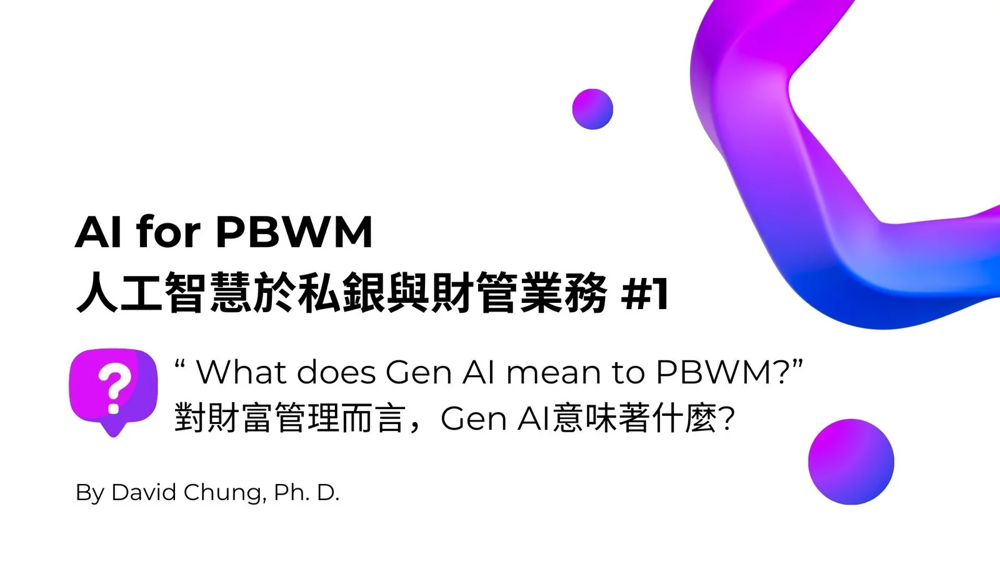
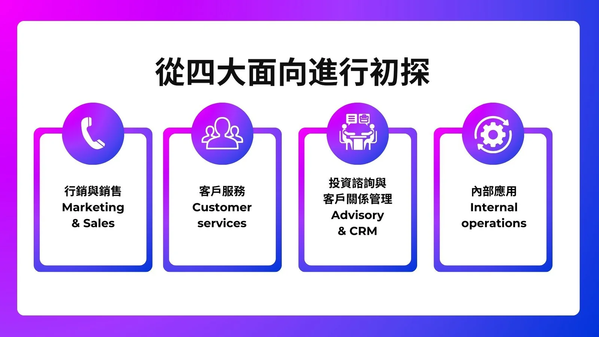
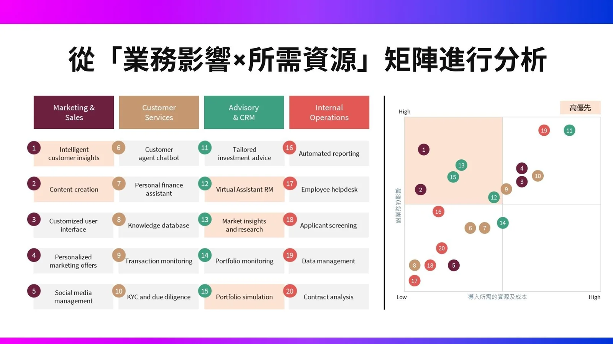
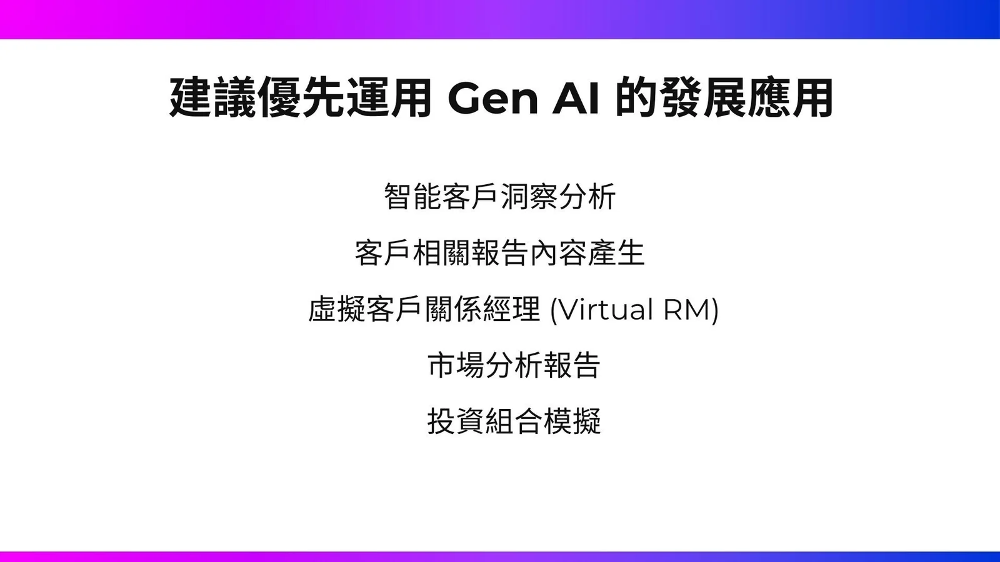

在本系列文章中，我們將深入探討人工智慧（AI）如何變革私銀與財管業務。
前言
人工智慧 (AI) 正在快速變革金融業，從提升客戶體驗到優化內部運作，AI 的應用無所不在，對於金融業而言，AI 的整合正在重新定義金融服務的標準。本篇短文將聚焦各金融機構如何辨別出「最佳的」生成式AI於其在私銀與財管業務上的應用。
潛在的業務應用盤點與辨識
我們可以從四大面向初步進行盤點：
- 行銷與銷售
- 客戶服務
- 投資諮詢與客戶關係管理
- 內部應用
本文中，我們進一步針對上述四大面向各提出五項最具應用AI的業務內容。
決定應用的優先序
我們使用了「業務影響 × 所需資源」矩陣，定義出了四個象限，並將前一個步驟中所盤點出來的應用進行討論，並定位在四個象限中。隨後，挑選「高業務影響與需要較少的資源」的象限（即左上角）中的應用，初步得到以下五大高優先序的應用：
1. 智能客戶洞察分析：
生成式AI通過分析社交媒體、過去互動等外部數據，提供趨勢、情感和新興需求的洞察，幫助金融機構更準確地了解客戶。
2. 客戶相關報告內容產生：生成式AI可以自動收集和綜合多來源數據，生成週報、月報等客戶報告，大大減少人工參與時間。
3. 虛擬客戶關係經理 (Virtual RM)：生成式AI支援RM進行客戶互動，如記錄會議筆記、安排後續行動和提供參與建議，提高效率和服務質量。
4. 市場分析報告：生成式AI通過處理和分析大量市場數據，生成即時的市場洞察和分析報告，幫助投資決策。
5：投資組合模擬：生成式AI利用實時市場數據和研究，模擬各種投資策略及其潛在結果，幫助投資者做出更明智的決策。
小結
金融機構在導入AI與Gen AI的過程中，即可以透過上述的方法定位出可優先發展的應用，作為組織內部「AI發展策略藍圖」的其中一個關鍵步驟。
【AI for Private Banking and Wealth Management Series #1】
In this series, we will delve into how artificial intelligence (AI) is transforming private banking and wealth management.
This article focuses on how financial institutions can identify the “best” applications of generative AI in their private banking and wealth management operations. Through the “Business Impact × Required Resources” matrix and analysis from four perspectives, we have preliminarily concluded the following:
-
Intelligent Customer Insights Analysis: Generative AI provides insights into trends, sentiment, and emerging needs by analyzing external data such as social media and past interactions, helping financial institutions better understand their customers.
-
Customer-Related Report Generation: Generative AI can automatically collect and synthesize data from multiple sources to generate weekly, monthly, and other customer reports, significantly reducing manual involvement.
-
Virtual Relationship Manager (Virtual RM): Generative AI supports RMs in customer interactions by recording meeting notes, scheduling follow-ups, and providing engagement insights, improving efficiency and service quality.
-
Market Analysis Reports: Generative AI processes and analyzes large volumes of market data to generate real-time market insights and analysis reports, aiding investment decisions.
-
Investment Portfolio Simulation: Generative AI uses real-time market data and research to simulate various investment strategies and their potential outcomes, helping investors make more informed decisions.